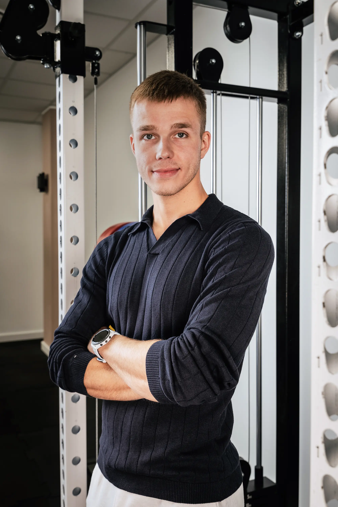

MICHAŁ
Nazywam się Michał i jestem trenerem personalnym, trenerem sportów walki oraz head coachem w studiu Hiperbola. Przez ponad dekadę trenowałem Muay Thai, najpierw jako zawodnik, później jako trener. Moje podejście opiera się na systemie, a nie na przypadku. Nie wierzę w ekstremalne rozwiązania ani chwilowe zrywy. Szukam przyczyn, upraszczam proces i dopasowuję strategię do człowieka, a nie człowieka do schematu. Mam analityczne podejście do treningu i wierzę, że wyniki są efektem konsekwencji, a nie perfekcji. Stawiam na proces i metody, które można utrzymać długoterminowo.
Specjalizacje
- Sporty walki
- Budowa sylwetki
- Redukcja tkanki tłuszczowej
- Trening siłowy
- Przygotowanie motoryczne
Kwalifikacje
- Kurs „Trener personalny” (2023, Akademia KFD)
- Kurs „Fundamenty treningu siłowego” (2025, PodSztanga.pl)
- Kurs „Analiza ruchu” (2026, PodSztanga.pl)